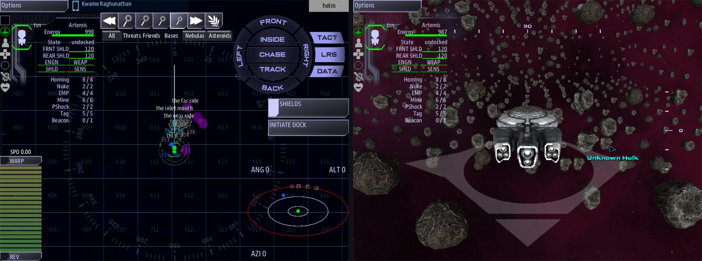

Class 4, Lecture 1 - What a ruin is¶
What you will have at the end¶
Ten minutes flown inside a ruin, and a picture of what a ruin is made of.
You will have flown through a ruin borrowed from a shipped campaign, read the thirty lines that built it, and read the rest of its file: the parts this class teaches you to write. You will also have the mission the rest of this class is built in.

Helm's map with The Sink on it, and the main screen just inside the inlet: purple haze and rock.You paste one block today, and you delete it again at the end. You write nothing of your own until Lecture 2.
The video¶
About 5 minutes. Subtitles are available in the player.
Before you start¶
- You have finished Class 1 and Class 2. You can make a mission with
sbs create, open it in VS Code, runsbs lint, and start the game withsbs run. - A command prompt open in
C:\Cosmos\data\missions. - The game closed.
Words for this lecture:
| Word | Meaning |
|---|---|
| Ruin | An old, built place in space, big enough to fly a ship inside. The game's own word for it is relic, and that is the word you type |
| Room | One hollow space inside a ruin |
| Passage | A tunnel between two rooms |
| Place | A named spot inside a ruin. It takes up no space. The game's word is point |
| Wall | Everything that is not a room or a passage. You never write a wall |
| Episode | One ruin and the story that runs through it |
Stop 1 - A mission for this class¶
This class does not build on MyMission. Your Class 1 story ends the game ten minutes
after it starts, and a ruin takes longer than that to fly. It also would not matter which
of Classes 2, 3 and 5 you have added to it. So the ruin gets a mission of its own.
Make it the way you made MyMission. Type this as one line:
Press Enter at the question. It ends:
Then bring its libraries up to date, once:
Open the MyRuin folder in VS Code and trust it, as in Class 1, Lecture 3. Then check
what you were given:
It is the mission you started Class 1 with: a station named DS 1, a drifting hulk 9000
out, and a two-step story named First Contact. mission.amd is 60 lines long.
Stop 2 - Borrow a ruin¶
Storm's Beacon is a campaign that ships for this game. It is a chain of ruins, and one of the smallest is called The Sink: one enormous flooded room with a hole in one end.
You do not need Storm's Beacon on your computer. The block below is The Sink's own file, cut down to the part your mission can build today. Stop 5 shows you what was cut.
Open mission.amd. Go to the very end of the file, below the last line of Derelict
Materials. Leave two blank lines, and paste:
## [Relics](relics)
### [The Sink](sink)
---
Loc: 6000, 0, 12000
Atmosphere: purple
Seed: 113
Art: plain_asteroid_6, plain_asteroid_8, plain_asteroid_9
Walls: cave, rock
---
One room, flooded and enormous, with a hole in one end.
### [the inlet](inlet)
---
Relic: sink
Box: -3250, 0, 0, 1000, 350, 350
---
The hole in the end. It is the only way in and it is the only way out.
### [the sink](basin)
---
Relic: sink
Box: 200, 0, 0, 2600, 900, 2600
---
Five kilometers of room and no floor plan at all. Fly it however you like - there is
nothing in here that cares which way you came.
### [the drift](drift_solid)
---
Relic: sink
Solid: sphere, 200, 0, 0, 700
---
A mass of settled debris hanging in the middle of the room, big enough to hide the far wall
from the near one.
### [the inlet mouth](mouth)
---
Relic: sink
Point: -4400, 0, 0
Roles: entrance
---
### [the near side](at_near)
---
Relic: sink
Point: -1600, 0, 0
Roles: sink_near
---
### [the far side](at_far)
---
Relic: sink
Point: 2000, 0, 1600
Roles: sink_far
---
Behind the drift, which is the only reason there is a "far side" at all.
Save, and run lint again. It should still say clean.
The whole block is also in this lecture's example\mission.amd, from line 63 to the end,
if you would rather copy it from a file.
One line of this block is not in the shipped file: Loc: 6000, 0, 12000, which says
where the ruin stands. Storm's Beacon decides that while the game runs. Your mission has
to be told.
Stop 3 - Fly it¶
Start the game with a server and a Helm console:
- On Helm's map, look past the hulk and off to one side for a marker named The Sink. The hulk is 9000 from the station. The marker is 12000 out and 1600 across.
- Fly to the marker. It sits at the mouth of the way in, just outside the ruin.
- Fly on in the same direction. You are in the inlet: a long, narrow room, 2000 long and 700 across. The haze is purple.
- The inlet opens into the big room, which is 5200 across. Rock is all round it, a long way off.
- A mass of rock hangs in the middle of the big room. That is the drift. Fly round it to the far side.
- Watch the map as you go. Three names turn up on it, each when the ship comes within 1200 of the spot: the inlet mouth, the near side and the far side.
The rock is scenery. It does not stop your ship, and you can fly out through it.
What the game made from the block, counted in a test run:
| It made | How many |
|---|---|
| Rooms | 2 |
| Rocks round the two rooms, and loose inside them | 682 |
| Rocks for the drift | 50 |
| Clouds of haze | 4, all purple |
| Names on the map at the start | 1, The Sink |
| Places that light up when the ship comes near | 3 |
Nobody wrote any of those 732 rocks. Close the game when you have looked round.
Stop 4 - Read what you pasted¶
Go back to mission.amd and read the block as a list. It has one section, and seven
records in it.
| Record | The line that says what it is | It is |
|---|---|---|
| The Sink | No Relic: line. It is the first record, and the others point at it |
The ruin itself |
| the inlet | Box: |
A room with flat sides |
| the sink | Box: |
A second room, very large |
| the drift | Solid: |
A mass standing in a room. It takes space away |
| the inlet mouth | Point: and Roles: entrance |
A place. The ruin's name on the map sits here |
| the near side | Point: |
A place |
| the far side | Point: |
A place |
Four things to notice. You will write every one of them yourself in the next two lectures.
Every record but the first says Relic: sink. sink is the key of the ruin, the
word in round brackets in its heading. That line is how a room says which ruin it belongs
to.
Nobody wrote a wall. The two Box: lines say where the open space is. The game put
rock around it.
The numbers are measured from the ruin. Box: -3250, 0, 0, ... is 3250 to one side
of wherever the ruin stands. Only Loc: is measured from the map.
The rooms overlap. The inlet reaches from 4250 to 2250 on its side of the ruin, and the big room starts at 2400. The 150 they share is the doorway. Two rooms that only touch have no door between them.
Stop 5 - Read the rest of the file¶
The shipped file is 348 lines long. You pasted 56. The rest is what this class teaches. Here is one piece of each part, exactly as it ships. Do not type any of it.
A place that speaks (Lecture 4). In the shipped file the near side has two more lines:
### [the near side](at_near)
---
Relic: sink
Point: -1600, 0, 0
Roles: sink_near
Scene: sink_near_look
Scan: A drift of debris hangs in the middle of the room, hiding the far wall.
---
Scene: names a conversation, written lower down in a section called Dialogue:
### [The Far Side](sink_far_look)
---
Backdrop: pic:cv_rubble
---
% Behind the drift: the far side, and the heaviest of everything that ever settled here, heaped against the wall. A haul, if anyone can shift it.
- [Tell Eddy what you have found](sink_far_eddy) if comms
- [Move on]()
You wrote scenes like this in Class 2. In a ruin, a place can hold one.
Something to find (Lecture 5 will teach this). A place can hold a thing:
### [the haul](haul_place)
---
Relic: sink
Point: 2000, 0, 2000
Roles: sink_treasure
Item: sink_salvage
Qty: 5
---
And the thing is a record in a section called Items:
### [deep haul](sink_salvage)
---
Type: item/salvage
Art: ruins_find_sink_salvage, alien_1a
Price: 320
Sprite: pic:find_sink_salvage
---
A thousand years of things that drifted in and never drifted out. Eddy will empty his till.
A clue, a side story and a cutscene (Lecture 6). This place is hidden until somebody hears it from across the room:
### [the picket boat](sink_wreck)
---
Relic: sink
Point: 1300, -300, 0
Roles: sink_wreck
Hidden: yes
Item: clue_recorder
Starts when: signal sink_wreck_found
Scene: sink_wreck_look
Scan: A small hull crushed against the wrack, half buried in murk. Its recorder is still pinging.
---
HIDDEN until somebody hears the recorder from the near side.
This is a small story for one member of the crew:
### [Still Pinging](sink_pinging)
---
For: comms
State: active
Done when: signal recorder_taken
Leads to: at_near, sink_wreck
Pays: 80 credits
---
Something in the murk is still calling for help. Bring it home.
And this is what the main screen shows as the ship arrives:
### [One room](arrive_sink_1)
---
Cutscene: arrive_sink
Subject: relic_contact
Lens: 0, 2200, -6500
Seconds: 5
Overlay: lower_third
Name: The Sink
---
Whatever this was, it is a container now.
The story through it (Lecture 7). The quest steps that send a crew here are not in this file. They are in the campaign's main file: one step for reaching The Sink, and one for going in, which starts with a call from the professor who is paying for the trip. The bigger ruins have a step for each place. You will write such a chain for your own ruin.
Going in on foot (Lecture 8 will teach this). Most of what you just read is not for the ship at all. The scenes on the places, the things to find and the small stories are for members of the crew who leave the ship in suits.
What was cut, and why¶
| In the shipped file | Why your copy does not have it | Where it comes back |
|---|---|---|
Containment: tractor, Scrape band:, Margin:, Forbid jump: on the ruin |
They make the walls hold a ship. Your mission leaves that off, so a ship can always fly out | Not in this class |
Dress: ruins_cv_rubble on the drift, and a prop named the picket boat's hull |
They are pieces from an art pack your mission does not have. So your drift is plain rock | Lecture 3 explains art packs |
Scene: and Scan: on the places, and the Dialogue section |
A place's scene is read by a crew member in a suit | Lecture 4, then Lecture 8 |
Item: on three places, and the Items section |
A thing to pick up needs a record of its own, in an Items section, and that is a lecture by itself | Lecture 5 |
| The Cutscenes section | It is started by the campaign, not by the file | Lecture 6 |
| The Side Stories section | They are handed to people who leave the ship | Lecture 8 takes the crew out. Lecture 10 has a story to type |
A second solid, the wrack |
It only matters to the picket boat's story | Solids are in the reference |
Your copy keeps two words your mission does not know. Walls: cave, rock asks for a wall
kit named cave from the same art pack, and then for rock. The game uses the first word
it knows, so you got rock. Lecture 3 uses that on purpose.
Stop 6 - Give it back¶
The Sink was a loan. Lecture 2 starts with the mission as sbs create made it.
- In
mission.amd, delete everything from the line## [Relics](relics)to the end of the file. The file should end with the last line of Derelict Materials again, and be 60 lines long. - Save, and run
sbs lint MyRuin. It should sayclean.
If you would rather keep The Sink to look at, make a second mission for it first
(sbs create Borrowed -t amd) and paste the block there.
If something goes wrong¶
Every row was tried on the block above.
| What you see | Why | What to do |
|---|---|---|
Lint prints twenty or more warnings, most ending unknown-field |
The first line of the block, ## [Relics](relics), was not pasted. The records are being read as scans |
Paste the heading above The Sink, with a blank line under it |
Lint says duplicate-key about relics |
The block was pasted twice | Delete the second copy |
Lint says unclosed-data-fence, an error |
The end of the block was cut off | Delete the block and paste it again, whole |
| No marker past the hulk, and rock all round the station | The Loc: line is missing. Lint says clean; mast.runtime.log in the mission folder says the ruin was built at 0, 0, 0 |
Put the line back |
sbs create says already exists and is not empty |
You have a MyRuin already |
Use it if it is untouched. If not, move it aside and make a new one |
Two slips at Stop 6 that lint does not report. Leaving the line ## [Relics](relics)
behind does no harm: an empty section is ignored. Deleting too far up does: if Derelict
Materials goes too, lint still says clean and the hulk has lost a reading. Count the
lines. There are 60.
Exercise¶
Do this before Stop 6, while The Sink is still in your file. Change one thing at a time, save, start the game, look, and close it.
- Change
Atmosphere: purpletoAtmosphere: green. - Change
Loc: 6000, 0, 12000toLoc: 6000, 0, 20000. Find the name on Helm's map again. - Make the big room smaller. In the record the sink, change
2600, 900, 2600to1500, 900, 1500. Run lint before you play, and read what it says. It has five warnings. The first is the one to understand:
[WARNING] line 65: 'sink' solves into 2 separate pieces - part of it cannot be flown to from the rest. Rooms must OVERLAP, not abut: a zero-thickness join reads as connected and is not (relic-disconnected)
The room no longer reaches the inlet, and two of the places are now outside it. The game builds it all the same, as two rooms with no door between them. Put the numbers back.
Then answer on paper, from the file alone and without the game:
- How long is the inlet, from end to end?
- How far is the far side from the near side, across the ruin?
- Which record would you copy to add a third place?
Checkpoint¶
You are done when all four are true:
- You have a mission folder named
MyRuin, andsbs lint MyRuinsaysclean. - You have flown into The Sink and seen its name on Helm's map.
- You can say what
Box:,Solid:,Point:andRelic:each do. mission.amdis 60 lines long again, with no Relics section.
Next¶
Lecture 2 writes a ruin of your own from an empty page: The Hollow, three rooms and two passages.
Further reading¶
Nothing here is needed for Lecture 2.
- "Relic interiors" in the library documentation: every field of a ruin. Read the first screen and stop.
- Storm's Beacon, if you have it:
relics\sink.amdis the file this page reads from, andrelics\voice.amdis the largest of its ruins.
Download this lecture's finished files (a zip of its example folder).